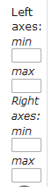
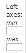
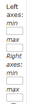
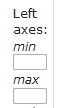

Click on the corresponding cell to change the corresponding value for:
Y1:  Y2:

Example:

Click on reset button to reset all minimum and maximum values.
During the graph creation, or once it is completed, the user can change/set minimum and maximum values of each y axis.

Click on the corresponding cell to change the corresponding value for:
Y1: 
Y2:
Example:
Click on reset button to reset all minimum and maximum values.